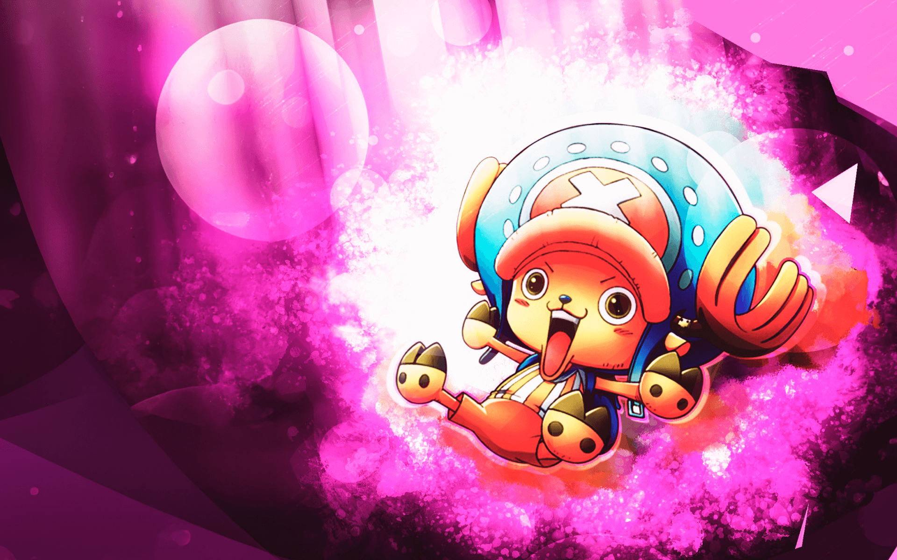

Monkey D. Luffy
Luffy do Chapéu de Palha", como ficou conhecido, é o protagonista do anime, e o fundador e capitão da tripulação Piratas do Chapéu de Palha. Desde muito jovem, tem como seu maior sonho um dia encontrar o lendário tesouro de Gol D. Roger, para se tornar o novo Rei dos Piratas.

Roronoa Zoro
Primeiro pirata (segundo membro se contarmos com Luffy) a se juntar à tripulação de Piratas do Chapéu de Palha, Zoro aceitou o convite de Luffy após o capitão salvar sua vida.

Nami
Órfã de guerra, ainda criança Nami foi adotada por Bell-mère, uma mulher da Marinha. Enquanto crescia ao lado de sua irmã adotiva Nojiko, Nami já demonstrava sua paixão por desenhar mapas, sonhando em um dia fazer o mapa de todo o mundo.

Usopp
O atirador da tripulação, é conhecido por sua pontaria impecável e por suas histórias frequentemente exageradas. Apesar de seus medos iniciais, ele se tornou um guerreiro valente do mar, sonhando em se tornar um "bravo guerreiro de Elbaf" para honrar seus companheiros.

Vinsmoke Sanji
Também conhecido como "Perna Negra" Sanji, este pirata foi o quinto a integrar a tripulação de Luffy. Suas ações como pirata lhe renderam a terceira maior recompensa entre os membros do Chapéu de Palha, além de atuar como cozinheiro oficial do grupo.

Tony Tony Chopper
Esta pequena rena ganhou a habilidade de mudar sua forma e de pensar como humanos após comer a fruta Hito Hito no Mi. Chopper é um valioso membro da tripulação dos Piratas do Chapéu de Palha, atuando como médico da tripulação.

Nico Robin
A arqueóloga dos Piratas do Chapéu de Palha, é a única sobrevivente da ilha de Ohara e detém o conhecimento proibido sobre os Poneglyphs. Com o sonho de descobrir a verdadeira história do Século Perdido, ela utiliza os poderes da Hana Hana no Mi para apoiar a tripulação com inteligência e estratégia.

Franky
Carpinteiro oficial do navio, é um ciborgue criativo e excêntrico responsável pela construção e manutenção do Thousand Sunny. Ele se juntou ao bando após projetar o navio dos sonhos de Luffy, com o objetivo pessoal de ver sua criação navegar até o fim da Grand Line.

Brook
Músico e espadachim da tripulação, é um esqueleto que retornou à vida graças aos poderes da fruta Yomi Yomi no Mi. Com sua personalidade otimista e sua paixão pela música, ele cumpre a antiga promessa de se reencontrar com a baleia Laboon após completar sua jornada ao redor do mundo.

Jinbe
O navegador dos Piratas do Chapéu de Palha, é um mestre do artes marciais e um dos poucos seres humanos que conseguiram dominar o poder da Haki. Ele se juntou à tripulação após ser resgatado por Luffy e Zoro, e seu objetivo é proteger a tripulação e ajudá-la em sua jornada.